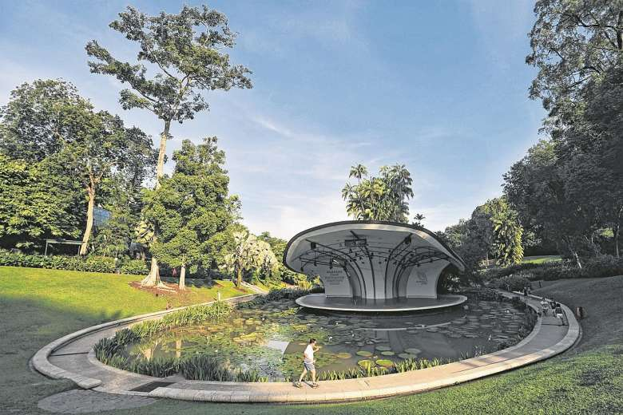
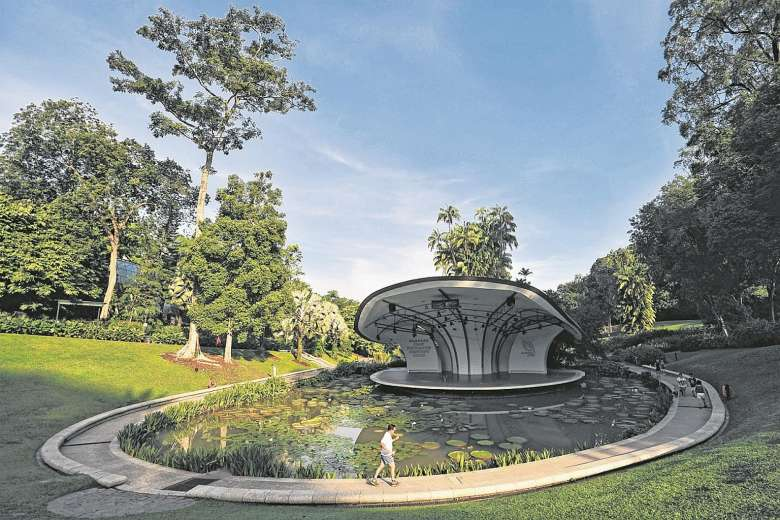
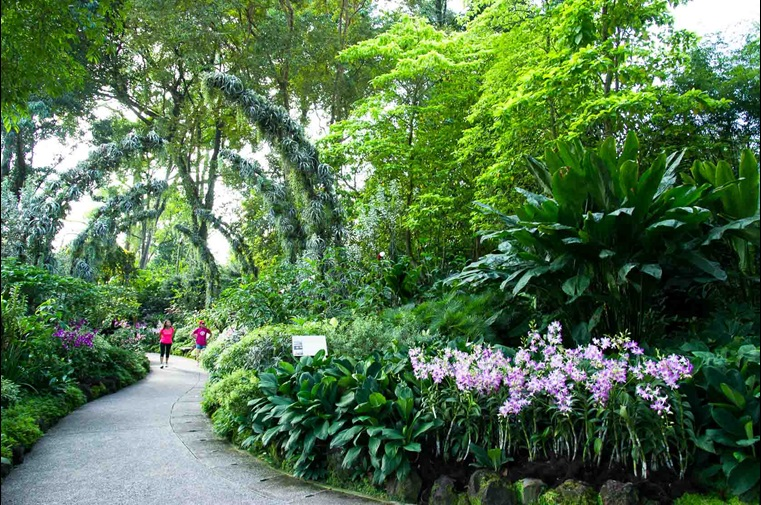
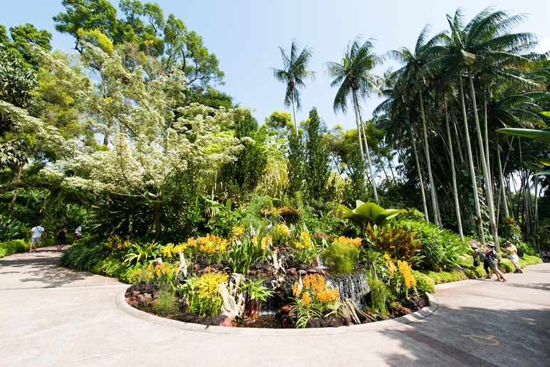
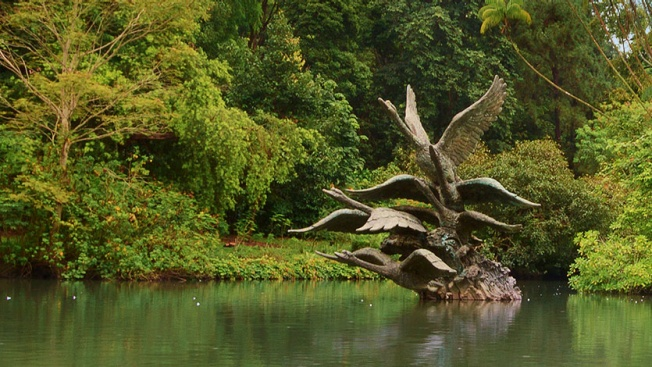
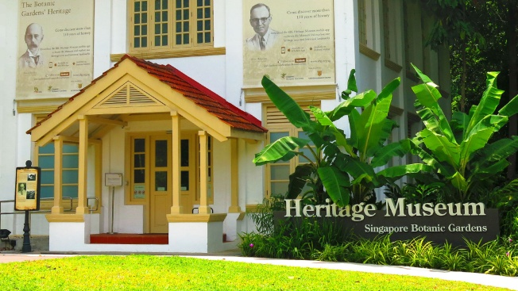
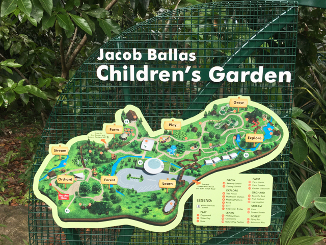
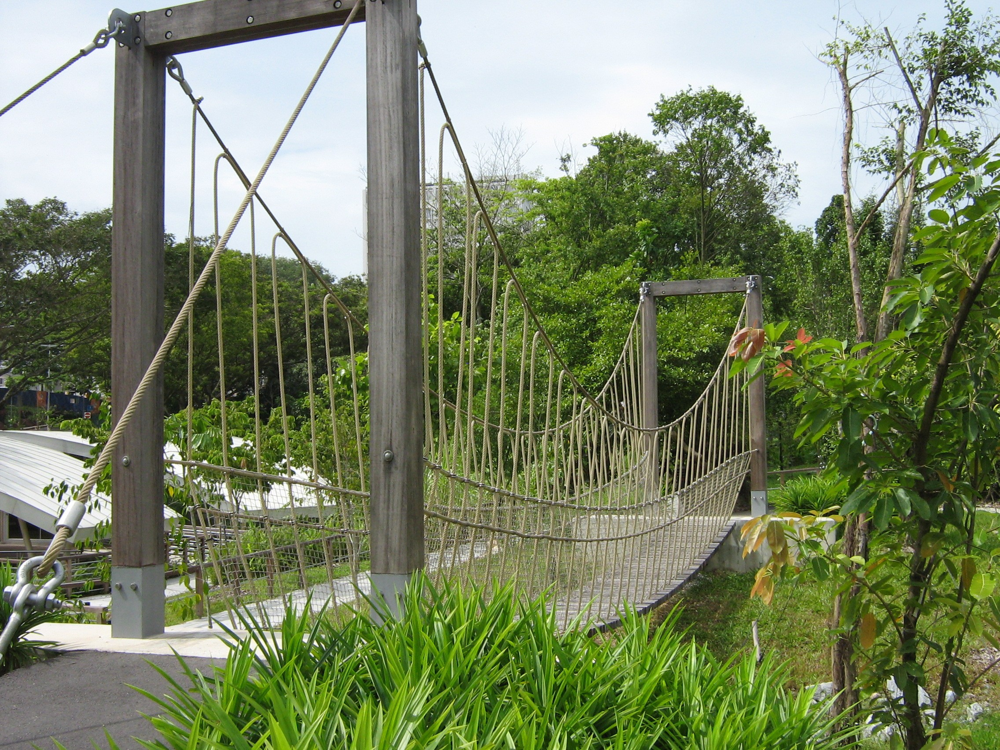

The Bandstand on Lawrence Niven's parade ground Symphonic Lake
In 1822, the idea for a national garden in Singapore was started by then founder of modern Singapore Sir Stamford Raffles, who came out with the first 'Botanical and Experimental Garden' at Fort Canning. It was only in 1859 that the Gardens was founded at its present site by an Agri-Horticultural society. The Gardens was subsequently handed over to the British colonial government in 1874, where it grew into an important botanical institute over the following decades through a series of Kew-trained botanists. At present, the Gardens is managed by the National Parks Board, a statutory board of the Singapore government.
With more than 150 years of history, the 82-hectare Gardens holds a symbolic and significant place in Singapore's history and the surrounding region. Through the ongoing agricultural work carried out today, it will continue to play an important role as a leading tropical botanical institute, and a captivating place for all Singaporeans to cherish.
Singapore's First UNESCO World Heritage Site
The Singapore Botanic Gardens was inscribed as a UNESCO World Heritage Site at the 39th session of the World Heritage Committee (WHC) in Bonn, Germany on 4th July 2015. This marked a milestone in Singapore's history, with the Gardens being the first UNESCO site in the country. The Gardens is the first and only tropical botanic garden on the UNESCO’s World Heritage List. It is the first in Asia and the third botanic gardens inscribed in the world following Orto botanico di Padova and the Royal Botanic Gardens, Kew.1 Cluny Road, Singapore 259569
National Orchid Garden
 
Since 1859, orchids have been closely associated with the Gardens. The products of the Gardens' orchid breeding programme, which began in 1928, deserve a place where they can be displayed in their full splendour. The very design of these orchids is, one could say, 'hand-crafted' by the Gardens' horticultural staff, dedicated to bringing out the finest in any hybrid cross.
Love admiring nature at its finest? With over 1000 species and 2000 hybrids on display, the splendour of these gorgeous blooms is absolutely a sight to behold at the National Orchid Garden.
Swan Lake
Enjoy peace & serenity? Then the swan lake is just the place for you to unwind & relax. The Swan Lake is home to numerous species of aquatic plants and fishes, and is named as such because of a pair of beautiful mute swans from Amsterdam that glide gracefully across the lake.
Singapore Botanic Gardens Heritage Museum
Built in 1921, the 240-square-metre Heritage Museum once served as the office and laboratory of the garden’s director, Professor Eric Holttum. This beautifully conserved colonial building now features a range of exhibits that highlight the garden’s history, and its role in establishing Singapore’s early rubber, sugar palm and orchid industries. Also located here are the artillery shell casings from the 21-Gun Salute for Singapore's founding Prime Minister, the late Mr Lee Kuan Yew.
Jacob Ballas Children's Garden
 Having trouble entertaining the kids? Bring them down to the Jacob Ballas Children’s Garden! This is the first garden in Asia dedicated to children. Its theme of ‘Life on Earth Depends on Plants’ aims to educate and instil a love for nature in children. The garden is a complete nature-learning environment, where children can delve deeper into the ecology of plants and the environment through discovery and experiential learning, whether is it exploring the suspension bridges or climbing into the tree-houses which are available on-site.
Facebook Twitter Youtube Instagram
2020 MyBlog. Last updated 1 April 2020. Contact